InAmigos Foundation is a Section 8 NGO dedicated to creating positive social impact through education, environmental conservation, community welfare, and volunteer-driven initiatives.
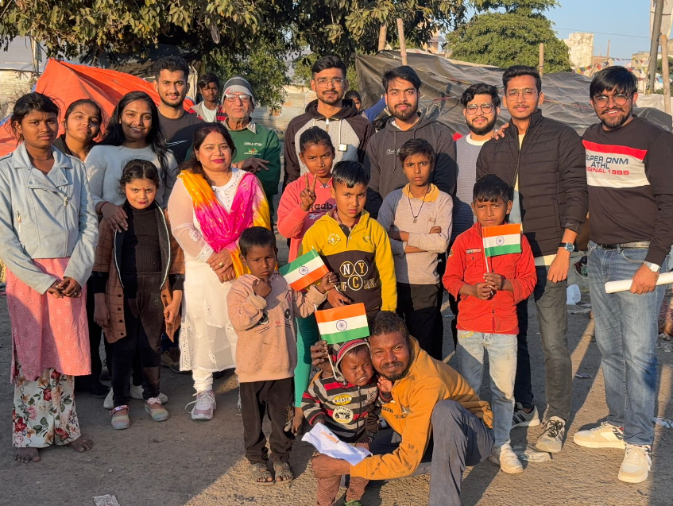
InAmigos Foundation is a Section 8 non-profit organization established on September 23, 2020, by Mr. Govind Shukla (Founder & CEO). Headquartered in Chhattisgarh, the organization works across India to create meaningful social impact through education, environmental conservation, women empowerment, animal welfare, food distribution, and skill development. Supported by dedicated volunteers and professionals, the foundation believes that collective efforts can transform lives and build stronger communities.
The organization is recognized under Section 8, holds 80G & 12A certification, is CSR-1 and NITI Aayog registered, and is IAF ISO 9001:2015 certified. Through initiatives like Project SEVA, Project Bachpanshala, Project JEEV, Project UDAAN, Project PRAKRITI, and Project VIKAS, InAmigos Foundation has positively impacted thousands of lives across the country while promoting transparency, sustainability, and community participation.
Founded
Registered NGO
Certified
Certified
Transforming lives through sustainable initiatives and community-driven programs.
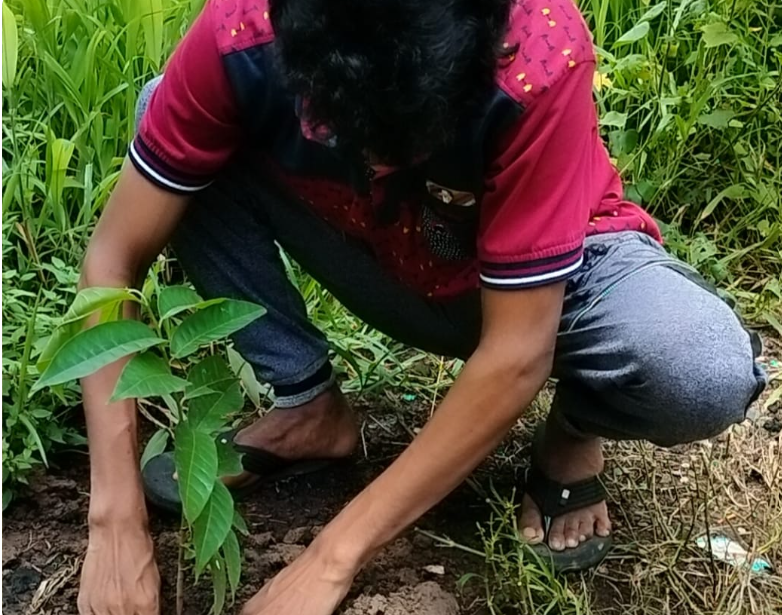
Promoting environmental conservation by planting over 20,000+ trees and encouraging sustainable living.
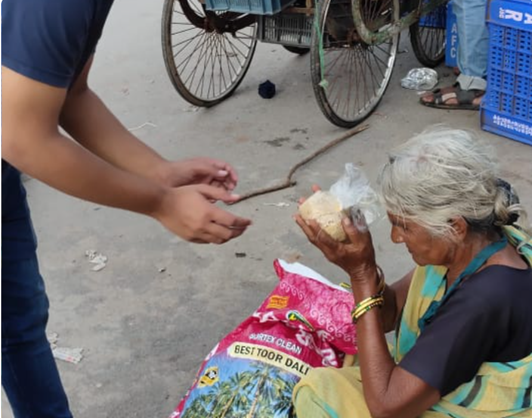
Providing food, clothes, and essential support to underprivileged communities with 50,000+ meals distributed.
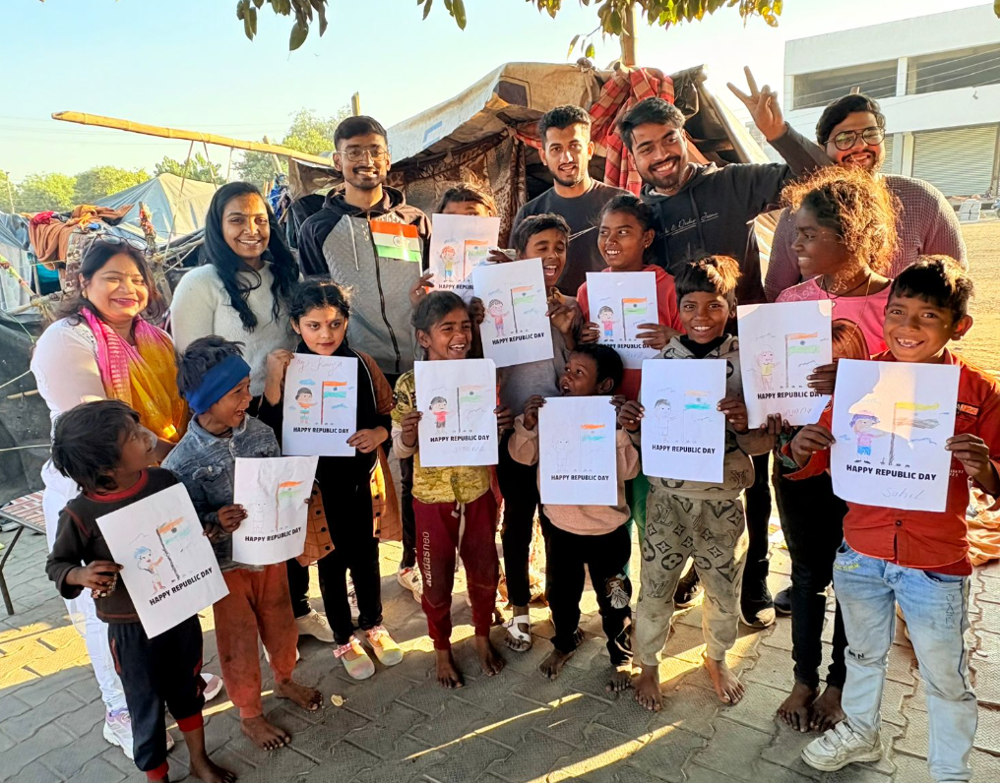
Supporting children's education through digital literacy, life skills, and academic guidance.
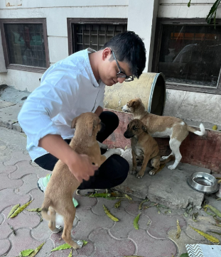
Dedicated to animal welfare by feeding more than 50 stray animals every day.
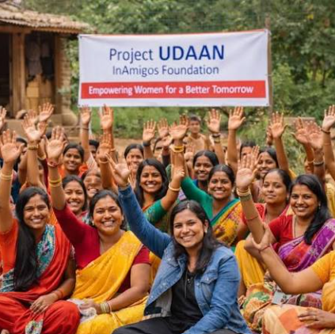
Empowering women through skill development, self-help groups, and menstrual hygiene awareness.
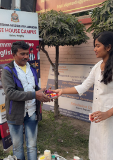
Creating career opportunities by training over 30,000 interns through industry-oriented internship programs.
Every initiative reflects our commitment to creating meaningful and lasting change.
Trees Planted
Meals Distributed
Women Empowered
Animals Fed Daily
Interns Trained
Serving Society Since
InAmigos Foundation is committed to transparency, quality, and creating meaningful social impact through recognized standards and government registrations.
Registered under the Companies Act and licensed by the Central Government.
Eligible to collaborate with companies for Corporate Social Responsibility initiatives.
Certified organization ensuring transparency and tax benefits for eligible donors.
Maintains internationally recognized quality management standards.
Registered on the NGO Darpan portal, supporting national development goals.
Working across India with dedicated volunteers to create sustainable social change.
A glimpse of our initiatives, volunteers, and community impact across India.
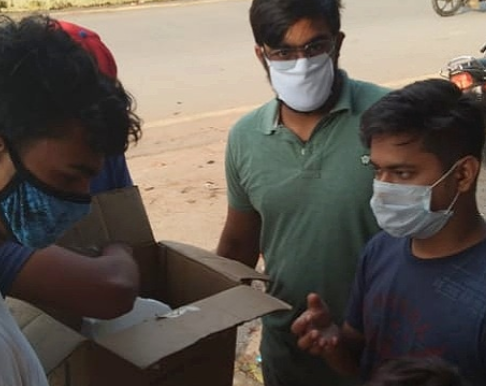
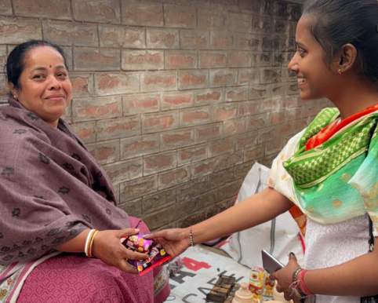
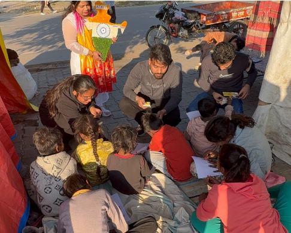
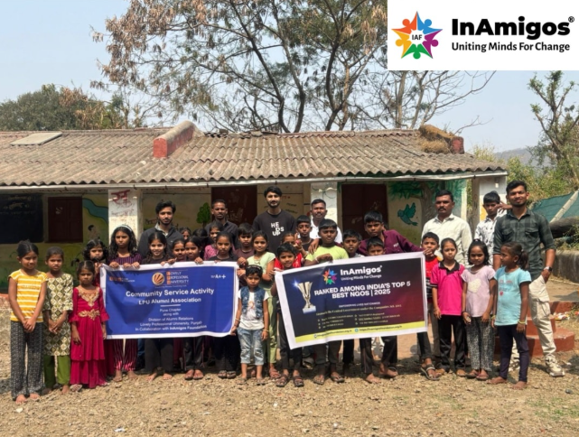
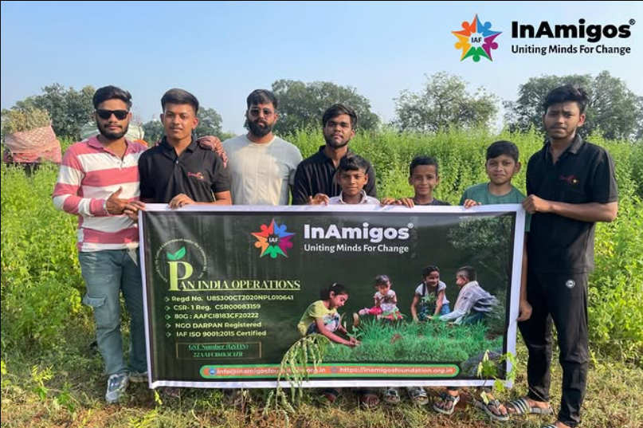
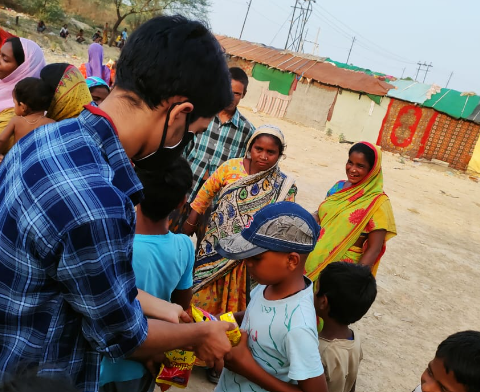
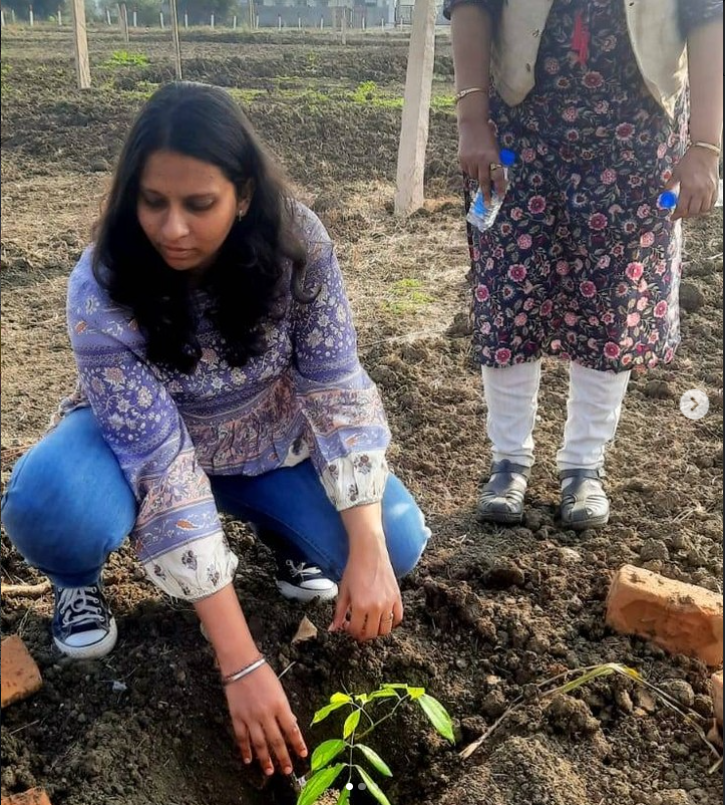
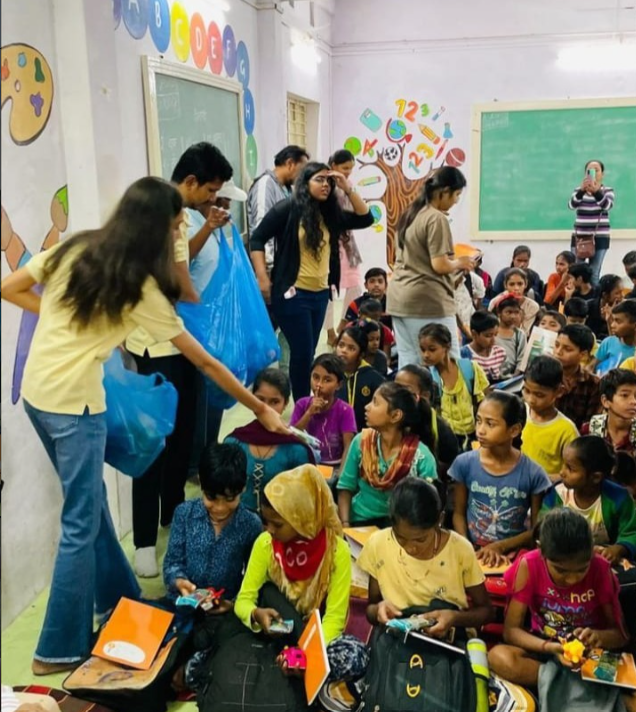
Join InAmigos Foundation as a volunteer, intern, or supporter and help us create a better future through education, environmental conservation, community service, and social impact initiatives.